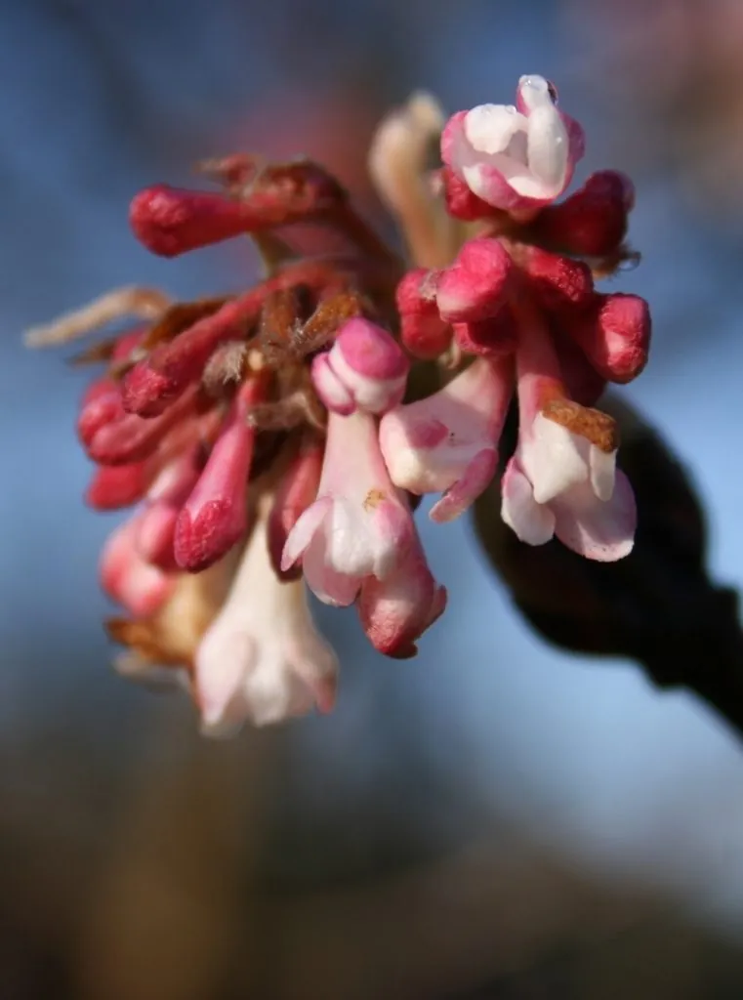

灌木与花木 · 植物界
香荚蒾 Viburnum farreri

忍冬科落叶灌木，早春先叶开粉白色花，香气浓郁，耐寒性强，是北方庭院常见的著名早春芳香花木。
- 分类
- 门被子植物门纲木兰纲目川续断目科忍冬科属荚蒾属
- 栖息环境
- 山坡灌丛、林缘与庭院，耐寒喜光
- 地理分布
- 中国华北、西北、西南及河南、陕西等地
- 保护级别
- 暂无评估；中国未列入国家重点保护野生植物名录
物种志
香荚蒾为忍冬科荚蒾属落叶灌木，高 2–4 米，枝条粗壮，幼枝红褐色。叶对生，椭圆形至倒卵形，边缘具锯齿。圆锥花序顶生，花蕾粉红色，开放后白色至淡粉色，花冠筒状，香气浓郁，花期 3–4 月，先叶开放；果实为核果，椭圆形，成熟时红色后转黑色，果期 8–9 月。
香荚蒾原产中国华北、西北及西南山地，生于山坡灌丛与林缘。它喜光，也耐半阴，耐寒性强，适宜疏松肥沃、排水良好的土壤。早春先叶开花，花香浓郁，是北方庭院常见的芳香花木；花可提取芳香油，枝条可入药。栽培以扦插和分株繁殖为主，花后修剪可促进新枝萌发；北方栽培应选择避风向阳处，以保护早春花朵免受冻害。
形态与习性
- 株高2–4 米，幼枝红褐色
- 花期3–4 月，先叶开放、香气浓郁
- 果期8–9 月，核果由红转黑
- 光照喜光，也耐半阴
- 水分喜湿润，忌积水
- 土壤疏松肥沃、排水良好的土壤
- 主要用途庭院芳香花木，花提取芳香油
趣味知识
- 香荚蒾早春先叶开花，花期比大多数春花更早。
- 它的花香浓郁，在远处就能闻到，因此得名香荚蒾。
- 香荚蒾耐寒性强，是北方庭院常见的芳香花木。
- 花可提取芳香油，枝条可入药。